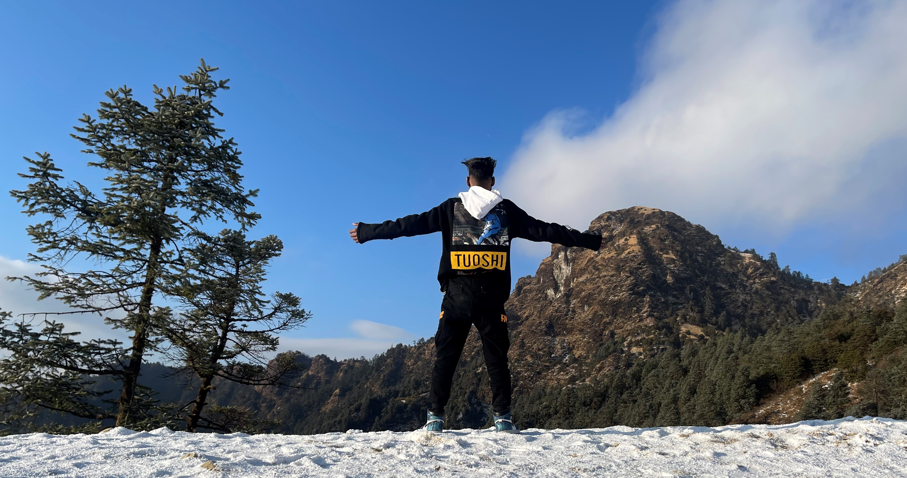

Blog
Education
Skills
Gallery
Passion
Contact
Roshan Aryal
Primary School
The Sunny Academy English Boarding School, Kalaiya ( Bara ) NEPAL
- Roshan Studied from "Nursery" to std."III" there and after he transferred to another boarding school.
Kalaiya Bright Land English Boa. School, Kalaiya ( Bara ) NEPAL
- He completed his SLC ( School Leaving Certificate ) from here.
Secondary School
National Infotech College, Birgung ( Parsa ) NEPAL.
- He completed +2 with the course computer science.
College
Kathmandu College of Technology, Lokanthali ( Bhaktapur ) NEPAL.
- Still he is studying here in the field of Computer Science and Information Technology ( B.Sc.CSIT 8th Semester )